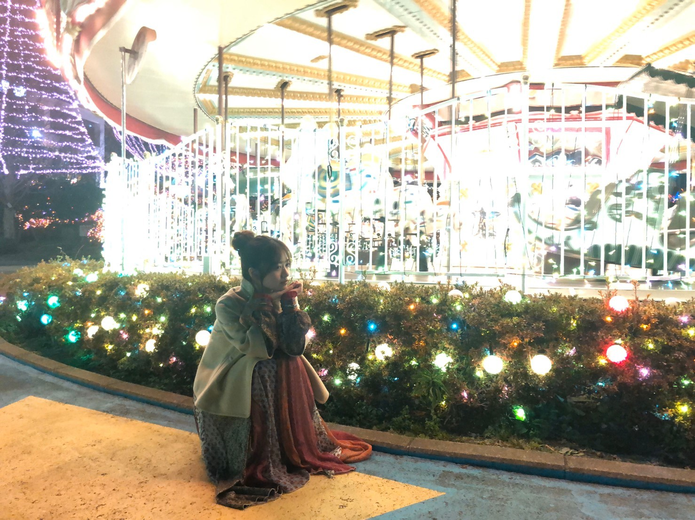
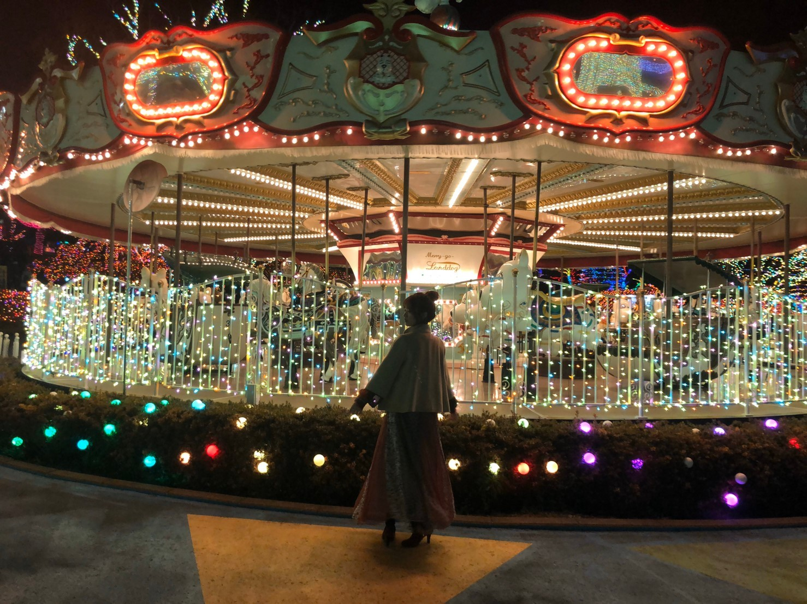
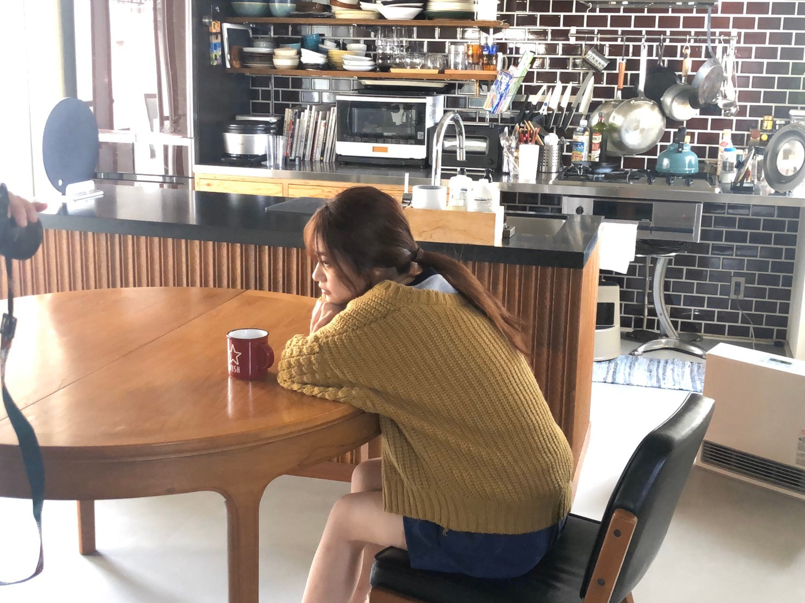
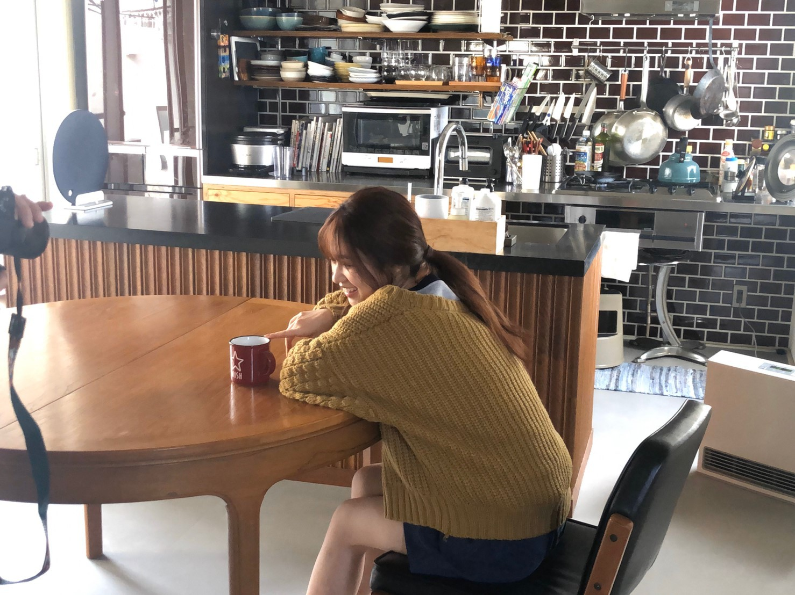

2020/0205Wed檸檬って漢字書ける人
今年に入ってから沢山撮影がありまして、、、
色んな街で
可愛いお洋服で撮影させてもらえて
幸せです。☺️
月刊エンタメさん発売中です。
オフショット




宜しくお願い致します。
オフショット沢山撮ってくださったので徐々に載せます。
是非、感想もお待ちしてます。
モバイルメールの方で長く長く綴らせて頂きましたが
私としては大好きな白石さんを
一歩でも近くで支えたかったです。
井上さんも勿論。
そして、琴子との最後の時間も何か形で残したかった、楽しく過ごしたい。
メンバー皆との時間
3人との時間を大切にしたいです。
私なりにラスト楽しんでいただけるように
そして、乃木坂46をひとりでも多くの方に知っていただけるように
頑張る姿勢や気持ちは加入当初から変わることはありません。
改めて、2期生として見てきたもの感じてきたことこれらの経験が役に立つシングルになればなと思っています。
そんな、本日は琴子とオールナイトニッポンです。
小さい頃から夜更かしが大好きというか夜行性な私は
夜寂しくなったらラジオを聴くこともよくあるので
実は毎回嬉しく思ってます。☺️
大好きな琴子と楽しみだー！！！
大好き大好きー！
2020/02/05 21:00


コメント(534)
頭いいな！！！がんばって！
ANN楽しみ〜！！
乃木坂ANNめちゃくちゃ楽しみにしてます！
楽しんできてね〜
2期生ライブ、楽しみやなあ。
行きたいなぁ。
楽しんでいこう〜っ
モバメもいつもありがとう
大好き大好きー！
漢字書けないや〜漢字苦手…
色んな服装の蘭世良きよき！
モバメ蘭世の思うがすごく伝わりました！
個握は千葉・横浜2回行くよ
よろしくねー
どんな蘭世でも応援できる自信があります！
ずっとずっと応援します。
個握は千葉・横浜2回行くよ
よろしくねー
就活で家離れてるから、月刊エンタメ買ったのに目通せてない泣
明日帰るから、しっかり読み込みます笑笑
その女本当好き。
ANN聴くよー！
2期生ライブも楽しみ！
頑張ってね！
まいやんと琴子の卒業は悲しいけど、笑顔で送り出せるように楽しんで活動してください！
二期生ライブ決まってめっちゃ嬉しかったし、絶対行きます！3月テスト終わってすぐライブなのでそれをモチベにして頑張ります！花粉とかいろいろ流行ってるけど、体だけは気をつけてください。！25thの個握もたくさんとったから行くね これからもずっと大好きです。大切な人です。バスラ頑張ってください
オフショットたくさんありがとう！
今年に入ってから蘭世さんの好きな撮影がたくさんあったようだね！
随時チェックしていきますね
選抜発表の事はモバメでもそうだけど、蘭世さんはいつもの蘭世さんらしくいてくれれば何よりです！
まいやんと琴子にとってはラストシングルになっちゃうからって訳じゃないけど、今までと変わらずにたくさん思い出作ってね！
また後でコメント書きます。
最近、たくさんの雑誌に載っていてTwitterでオフショとか見る度に蘭世凄いな〜そして相変わらず可愛いな綺麗だな〜って思ってる笑
選抜発表があったね
蘭世は選抜に入るかな？って思ったけど残念だったね、、
何で蘭世がアンダーなの？ってすっごく思うし、悔しいし悲しいけどあたしよりその気持ちが強いのは蘭世だから、これ以上言わないようにする、、
どのポジションでも蘭世を応援することには変わりないから、蘭世らしく頑張っていれば大丈夫だと思います
あたしも結構夜行性なんだ〜！！笑
次の日がお休みだと夜更かししちゃうタイプ笑
ＡＮＮ聴けたら聴くね〜！眠くなってたら寝ちゃってるかもしれないけど、その時はごめんなさい_(._.)_
それじゃあ、今日はここまで！
今日も一日お疲れ様でした！明日からも日々頑張りましょう！
大好き♡♡♡
オフショットもありがと(^^)
俺は大丈夫
蘭世を応援する気持ちは変わらないから(^^)
前しか向いてない！！
あとおばあちゃんになっても絶対余裕で好きだよ笑
オールナイトめっちゃ楽しみだー！！
今日は寝ない笑
楽しみにしてるねー(⌒‐⌒)
いつもと違う雰囲気は変に緊張しますが、やってる事はいつもと一緒。なので明日は自分らしく頑張りたいと思います！！
選抜発表やっぱり悔しかったな、
でも、ずっーと応援しているね！
たくさんした撮影実際の雑誌となり僕達ファンに届くのが待ち遠しいです
月刊エンタメもちろん購入して読ませて頂きました
特に室内でのコップを持ったカットがお気に入りで待ち受けにしたいくらいです
もちろんモバメでのアツいメールしかと受け止めました
蘭世の炎の熱に心動かされ応援してきたこの時間たくさんの人に出会い純粋に蘭世を応援すること蘭世のことで喜べること楽しめること何もが大切な人生の1部です
もうちょっと歳を取ってから振り返っても蘭世を応援しているこの数年のページだけはとても色濃く鮮明に覚えている事だと思います。
3人の残りの乃木坂46としての残りの時間いっぱい甘えていっぱい楽しんでください
そんな話をまた蘭世の口から聞くのが楽しみです
いつもありがとう
これからも何卒
ブログ更新ありがとう
モバメの内容しっかりと読んでるよ！
蘭世の思っていることが知れてよかったよ
悔しい気持ちはあると思うけどずっとずっと蘭世のこと応援してるよ！
青い炎のように熱量高く頑張ろう！！
オールナイトニッポン頑張ってね
本当は聴きたい所なんだけど明日も朝早いから聴けなくてごめんね
後日絶対に聴くからね
今回はこの辺で
またコメント書くね
らんぜの勢いとまらんぜ〜
エンタメさんめちゃくちゃかわいかった～！
全部彼女感があって表情も自然でほんとにデートしてるみたいだった！
おだんごしてる時のワンピースもめちゃくちゃかわいい～
深夜の高カロリー食には気を付けてね笑
ラジオも楽しみにしてまっす！
頑張ってリアタイする！
ではではまた～
らんらんの伸び代はこれからも続く。これからとっっても楽しみ！！！
わたしの憧れは永遠のらんらんです。大好き大好き！
らんぜーーーー
お疲れさま
無理なくね
早く蘭世に逢いたいぞーーーーー
また書くね
本当に最近は撮影が沢山ありますよね！それだけ注目されているという事ではないでしょうか！ファンにとっても嬉しい限りですね〜
月刊エンタメさんもチェックしましたよ〜可愛くて綺麗でした！とても好きです！
そして、今回のシングルは選抜かアンダーかと言う括りだけでは無いと思います。選抜もアンダーも全員で一緒に、まいやん、サユリストさん、琴子さんを送り出しましょう！我々もお手伝いしますよ〜
これまで一緒に過ごして期間は長いのですから、最後まで一緒に楽しんで下さい！
オールナイトニッポンも琴子さんと楽しんで下さいね！
たまには夜更かしもいいですけど、毎日はダメですよ！？
これからも応援してます！蘭世の勢いとまらんぜ！
オフショットいっぱいありがとう。
まいやんもさゆも琴子も寂しい((T_T))
蘭世らしく楽しく思い出作ってください～！！！
今日のANN少し夜更かしして聞きまーす
りゅーやです。
今日はオールナイトニッポンだね！！2期生大集合回ぶりで短いスパンで呼ばれること嬉しいね！
今日は夜更かししよー
細かくブログ更新してくれてありがとう
オフショットもありがとう、貴重だね☺️
青い炎は熱いよね
赤い炎はそこまで温度が高くないからゆらゆらするんだよね、ロウソクの火みたいに
青い炎は周りとの温度差でゆらゆらせず真っ直ぐ上に燃えてるんだよね
真っ直ぐ真っ直ぐ、僕達もそんな気持ちで一緒に青く燃えてるものを持ち続けます。
今シングルもよろしくね！！
年明けてから握手会もなく、正直寂しいー
話したいことがどんどん増えてるー
エンタメチェックします！
見たらまた感想コメントしにくるね！
オフショットの1枚目のベッドのやつ
メイク薄目なのかな？ナチュラルな感じでお顔が引き立つ、、しっかりメイクとは違った良さ！
カフェの感じの服装好きだな！
カラシ色のセーターとっても良き！蘭世自身着てそう！とても似合う！
誌面で見るの楽しみですー
モバメで行ってくれてた撮影沢山の1つなのかな？
まだ冬の寒い時期にやってたから、オフショットの遊園地のとかも寒そう、、とか思いながら見たいと思いますー！
りゅーやより
これからも蘭世ちゃんを精一杯応援していきます
選抜発表お疲れ様でした
1期生全員が福神に選ばれた今回の選抜
個人的にはうれしい反面悲しい部分もありました
本当に毎回入ってほしいの一心です
別に誰が悪いとか無いし
誰も頑張って無い訳じゃないからこそ悔しいです
自分達ファンは応援することしか出来ないので
その出来る唯一のことは全力でやります
そして毎回目標に向かって頑張っている蘭世を本当に尊敬します
頑張っているのは分かってるので頑張ってくださいなんて言いません
モバメも毎回心に刺さります
蘭世の思うままに進んでほしいです
応援してます
僕らも純粋な気持ちで応援します！
凄い心に響くことはあります。最後笑顔で送り出せればいいなーとは思います。だけどやっぱり卒業は悲しいですねサヨナラに強くならなければ
2期生の益々の発展を願っています
ラジオ楽しみにしてるねー( ^ω^ )
蘭世のふわふわな話し方すきなんだぁ\(//∇//)\
その女！
レモンかけません。
最近先輩や友達に蘭世が可愛いとかここがすごいっていうのを話していたらそれきっかけで乃木坂に興味を持ってくれる人や握手会行ってみたいって言ってくれる人が増えてきました。
間違いなく蘭世のアツイ炎はみんなに伝わって広がってると思います！
自分を信じてこれからもいろんな蘭世をたくさん見せてください！
バスラ、二期ラ、個握楽しみにしてます！
もちろん今日のANNも頑張って起きて聞きます！
世間は感染症で大変なので蘭世も健康には気をつけて頑張ってください！
ずっと応援してます！
ブログ更新ありがとう:-p
喜章
(よしあき)
ブログ更新ありがとう！
オフショット沢山ありがとう！
今回のグラビアほんとに今まで見てきた中で結構好きだからまだまだオフショット待ってるよ！
まいやん、さゆとは最後のシングル一緒に歌うことは出来ないけど、他にも思い出作れる場面沢山あると思うから、最後まで楽しんでね
そして琴子とも沢山思い出を作れるといいね
今回のシングルも変わらず蘭世のことを応援してるからお互い頑張ろうね！
オールナイトニッポンのお知らせ聞いてめっちゃ嬉しかったよ〜！
でも今日5時間しか寝てないから寝落ちしないか心配…(笑)
意地でも起きて最後まで見てるね！
じゃあまた！
果物の漢字が難易度高いですね、林檎 は分かります。
オフショどれも素敵です。遊園地のが特に！
一瞬一瞬が大切な時間になっていきますね、最近、時の流れが早く感じます。だからこそ大切にしてほしいです。
乃木坂としても蘭世さんとしてもまだまだここからんぜ〜！
今、キャラバンは眠らないが流れてます
ann寝落ちしないように聴きますー、楽しみ！
体調気をつけてくださいー。
コメントする